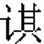
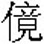
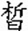
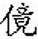
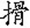
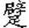
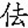
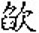

中国既以自尊大昭闻天下，善诋

者，或谓之顽固；且将抱守残阙，以底于灭亡。近世人士，稍稍耳新学之语，则亦引以为愧，翻然思变，言非同西方之理弗道，事非合西方之术弗行，掊击旧物，惟恐不力，曰将以革前缪而图富强也。间尝论之：昔者帝轩辕氏之戡蚩尤[160]而定居于华土也，典章文物，于以权舆，有苗裔之繁衍于兹，则更改张皇，益臻美大。其蠢蠢于四方者，胥蕞尔小蛮夷耳，厥种之所创成，无一足为中国法，是故化成发达，咸出于己而无取乎人。降及周秦，西方有希腊罗马起，艺文思理，灿然可观，顾以道路之艰，波涛之恶，交通梗塞，未能择其善者以为师资。洎元明时，虽有一二景教父师[161]，以教理暨历算质学干中国，而其道非盛。故迄于海禁既开，皙人踵至[162]之顷，中国之在天下，见夫四夷之则效上国，革面来宾者有之；或野心怒发，狡焉思逞者有之；若其文化昭明，诚足以相上下者，盖未之有也。屹然出中央而无校雠[163]，则其益自尊大，宝自有而傲睨万物，固人情所宜然，亦非甚背于理极者矣。虽然，惟无校雠故，则宴安日久，苓落以胎，迫拶不来，上征亦辍，使人苶，使人屯，其极为见善而不思式。有新国林起于西，以其殊异之方术来向，一施吹拂，块然踣
[164]，人心始自危，而辁才小慧之徒，于是竞言武事。后有学于殊域者，近不知中国之情，远复不察欧美之实，以所拾尘芥，罗列人前，谓钩爪锯牙，为国家首事，又引文明之语，用以自文，征印度波兰[165]，作之前鉴。夫以力角盈绌者，于文野亦何关？远之则罗马之于东西戈尔[166]，迩之则中国之于蒙古女真，此程度之离距为何如，决之不待智者。然其胜负之数，果奈何矣？苟曰是惟往古为然，今则机械其先，非以力取，故胜负所判，即文野之由分也。则曷弗启人智而开发其性灵，使知罟获戈矛，不过以御豺虎，而喋喋誉白人肉攫之心，以为极世界之文明者又何耶？且使如其言矣，而举国犹孱，授之巨兵，奚能胜任，仍有僵死而已矣。嗟夫，夫子盖以习兵事为生，故不根本之图，而仅提所学以干天下；虽兜牟[167]深隐其面，威武若不可陵，而干禄之色，固灼然现于外矣！计其次者，乃复有制造商估立宪国会之说[168]。前二者素见重于中国青年间，纵不主张，治之者亦将不可缕数。盖国若一日存，固足以假力图富强之名，博志士之誉；即有不幸，宗社为墟，而广有金资，大能温饱，即使怙恃既失，或被虐杀如犹太遗黎[169]，然善自退藏，或不至于身受；纵大祸垂及矣，而幸免者非无人，其人又适为己，则能得温饱又如故也。若夫后二，可无论已。中较善者，或诚痛乎外侮迭来，不可终日，自既荒陋，则不得已，姑拾他人之绪余，思鸠大群以抗御，而又飞扬其性，善能攘扰，见异己者兴，必借众以陵寡，托言众治，压制乃尤烈于暴君。此非独于理至悖也，即缘救国是图，不惜以个人为供献，而考索未用，思虑粗疏，茫未识其所以然，辄皈依于众志，盖无殊痼疾之人，去药石摄卫之道弗讲，而乞灵于不知之力，拜祷稽首于祝由[170]之门者哉。至尤下而居多数者，乃无过假是空名，遂其私欲，不顾见诸实事，将事权言议，悉归奔走干进之徒，或至愚屯之富人，否亦善垄断之市侩，特以自长营搰[171]，当列其班，况复掩自利之恶名，以福群之令誉，捷径在目，斯不惮竭蹶以求之耳。呜呼，古之临民者，一独夫也；由今之道，且顿变而为千万无赖之尤，民不堪命矣，于兴国究何与焉。顾若而人者，当其号召张皇，盖蔑弗托近世文明为后盾，有佛戾[172]其说者起，辄谥之曰野人，谓为辱国害群，罪当甚于流放。第不知彼所谓文明者，将已立准则，慎施去取，指善美而可行诸中国之文明乎，抑成事旧章，咸弃捐不顾，独指西方文化而为言乎？物质也，众数也，十九世纪末叶文明之一面或在兹，而论者不以为有当。盖今所成就，无一不绳前时之遗迹，则文明必日有其迁流，又或抗往代之大潮，则文明亦不能无偏至。诚若为今立计，所当稽求既往，相度方来，掊物质而张灵明，任个人而排众数。人既发扬踔厉矣，则邦国亦以兴起。奚事抱枝拾叶，徒金铁[173]国会立宪之云乎？夫势利之念昌狂于中，则是非之辨为之昧，措置张主，辄失其宜，况乎志行污下，将借新文明之名，以大遂其私欲者乎？是故今所谓识时之彦，为按其实，则多数常为盲子，宝赤菽以为玄珠，少数乃为巨奸，垂微饵以冀鲸鲵。即不若是，中心皆中正无瑕玷矣，于是拮据辛苦，展其雄才，渐乃志遂事成，终致彼所谓新文明者，举而纳之中国，而此迁流偏至之物，已陈旧于殊方者，馨香顶礼，吾又何为若是其芒芒哉！是何也？曰物质也，众数也，其道偏至。根史实而见于西方者不得已，横取而施之中国则非也。借曰非乎？请循其本——夫世纪之元，肇于耶稣[174]出世，历年既百，是为一期，大故若兴，斯即此世纪所有事，盖从历来之旧贯，而假是为区分，无奥义也。诚以人事连绵，深有本柢，如流水之必自原泉，卉木之茁于根茇[175]，倏忽隐见，理之必无。故苟为寻绎其条贯本末，大都蝉联而不可离，若所谓某世纪文明之特色何在者，特举荦荦大者而为言耳。按之史实，乃如罗马统一欧洲以来，始生大洲通有之历史；已而教皇以其权力，制御全欧，使列国靡然受圈，如同社会，疆域之判，等于一区；益以梏亡人心，思想之自由几绝，聪明英特之士，虽摘发新理，怀抱新见，而束于教令，胥缄口结舌而不敢言。虽然，民如大波，受沮益浩，则于是始思脱宗教之系缚，英德二国，不平者多，法皇[176]宫庭，实为怨府，又以居于意也，乃并意太利人而疾之。林林之民，咸致同情于不平者，凡有能阻泥教旨，抗拒法皇，无间是非，辄与赞和。时则有路德（M. Luther）者起于德，谓宗教根元，在乎信仰，制度戒法，悉其荣华，力击旧教而仆之。自所创建，在废弃阶级，黜法皇僧正[177]诸号，而代以牧师，职宣神命，置身社会，弗殊常人；仪式祷祈，亦简其法。至精神所注，则在牧师地位，无所胜于平人也。转轮[178]既始，烈栗遍于欧洲，受其改革者，盖非独宗教而已，且波及于其他人事，如邦国离合，争战原因，后兹大变，多基于是。加以束缚弛落，思索自由，社会蔑不有新色，则有尔后超形气学[179]上之发见，与形气学上之发明。以是胚胎，又作新事：发隐地[180]也，善机械也，展学艺而拓贸迁也，非去羁勒而纵人心，不有此也。顾世事之常，有动无定，宗教之改革已，自必益进而求政治之更张。溯厥由来，则以往者颠覆法皇，一假君主之权力，变革既毕，其力乃张，以一意孤临万民，在下者不能加之抑制，日夕孳孳，惟开拓封域是务，驱民纳诸水火，绝无所动于心：生计绌，人力耗矣。而物反于穷，民意遂动，革命于是见于英，继起于美，复次则大起于法朗西，[181]扫荡门第，平一尊卑，政治之权，主以百姓，平等自由之念，社会民主之思，弥漫于人心。流风至今，则凡社会政治经济上一切权利，义必悉公诸众人，而风俗习惯道德宗教趣味好尚言语暨其他为作，俱欲去上下贤不肖之闲，以大归乎无差别。同是者是，独是者非，以多数临天下而暴独特者，实十九世纪大潮之一派，且曼衍入今而未有既者也。更举其他，则物质文明之进步是已。当旧教盛时，威力绝世，学者有见，大率默然，其有毅然表白于众者，每每获囚戮之祸。递教力堕地，思想自由，凡百学术之事，勃焉兴起，学理为用，实益遂生，故至十九世纪，而物质文明之盛，直傲睨前此二千余年之业绩。数其著者，乃有棉铁石炭之属，产生倍旧，应用多方，施之战斗制造交通，无不功越于往日；为汽为电，咸听指挥，世界之情状顿更，人民之事业益利。久食其赐，信乃弥坚，渐而奉为圭臬，视若一切存在之本根，且将以之范围精神界所有事，现实生活，胶不可移，惟此是尊，惟此是尚，此又十九世纪大潮之一派，且曼衍入今而未有既者也。虽然，教权庞大，则覆之假手于帝王，比大权尽集一人，则又颠之以众庶。理若极于众庶矣，而众庶果足以极是非之端也耶？宴安逾法，则矫之以教宗，递教宗淫用其权威，则又掊之以质力。事若尽于物质矣，而物质果足尽人生之本也耶？平意思之，必不然矣。然而大势如是者，盖如前言，文明无不根旧迹而演来，亦以矫往事而生偏至，缘督[182]校量，其颇灼然，犹孑与躄[183]焉耳。特其见于欧洲也，为不得已，且亦不可去，去孑与躄，斯失孑与躄之德，而留者为空无。不安受宝重之者奈何？顾横被之不相系之中国而膜拜之，又宁见其有当也？明者微睇，察逾众凡，大士哲人，乃蚤识其弊而生愤叹，此十九世纪末叶思潮之所以变矣。德人尼佉（Fr. Nietzsche）[184]氏，则假察罗图斯德罗（Zarathustra）之言曰，吾行太远，孑然失其侣，返而观夫今之世，文明之邦国矣，斑斓之社会矣。特其为社会也，无确固之崇信；众庶之于知识也，无作始之性质。邦国如是，奚能淹留？吾见放于父母之邦矣！聊可望者，独苗裔耳。[185]此其深思遐瞩，见近世文明之伪与偏，又无望于今之人，不得已而念来叶者也。
然则十九世纪末思想之为变也，其原安在，其实若何，其力之及于将来也又奚若？曰言其本质，即以矫十九世纪文明而起者耳。盖五十年来，人智弥进，渐乃返观前此，得其通弊，察其黮暗，于是浡焉兴作，会为大潮，以反动破坏充其精神，以获新生为其希望，专向旧有之文明，而加之掊击扫荡焉。全欧人士，为之栗然震惊者有之，芒然自失者有之，其力之烈，盖深入于人之灵府矣。然其根柢，乃远在十九世纪初叶神思一派[186]；递夫后叶，受感化于其时现实之精神，已而更立新形，起以抗前时之现实，即所谓神思宗之至新者[187]也。若夫影响，则眇眇来世，肊测殊难，特知此派之兴，决非突见而靡人心，亦不至突灭而归乌有，据地极固，函义甚深。以是为二十世纪文化始基，虽云早计，然其为将来新思想之朕兆，亦新生活之先驱，则按诸史实所昭垂，可不俟繁言而解者已。顾新者虽作，旧亦未僵，方遍满欧洲，冥通其地人民之呼吸，余力流衍，乃扰远东，使中国之人，由旧梦而入于新梦，冲决嚣叫，状犹狂酲。夫方贱古尊新，而所得既非新，又至偏而至伪，且复横决，浩乎难收，则一国之悲哀亦大矣。今为此篇，非云已尽西方最近思想之全，亦不为中国将来立则，惟疾其已甚，施之抨弹，犹神思新宗之意焉耳。故所述止于二事：曰非物质，曰重个人。
个人一语，入中国未三四年，号称识时之士，多引以为大诟，苟被其谥，与民贼同。意者未遑深知明察，而迷误为害人利己之义也欤？夷考其实，至不然矣。而十九世纪末之重个人，则吊诡[188]殊恒，尤不能与往者比论。试案尔时人性，莫不绝异其前，入于自识，趣于我执，刚愎主己，于庸俗无所顾忌。如诗歌说部之所记述，每以骄蹇不逊者为全局之主人。此非操觚之士，独凭神思构架而然也，社会思潮，先发其朕，则迻之载籍而已矣。盖自法朗西大革命以来，平等自由，为凡事首，继而普通教育及国民教育，无不基是以遍施。久浴文化，则渐悟人类之尊严；既知自我，则顿识个性之价值；加以往之习惯坠地，崇信荡摇，则其自觉之精神，自一转而之极端之主我。且社会民主之倾向，势亦大张，凡个人者，即社会之一分子，夷隆实陷，是为指归，使天下人人归于一致，社会之内，荡无高卑。此其为理想诚美矣，顾于个人殊特之性，视之蔑如，既不加之别分，且欲致之灭绝。更举黮暗，则流弊所至，将使文化之纯粹者，精神益趋于固陋，颓波日逝，纤屑靡存焉。盖所谓平社会者，大都夷峻而不湮卑，若信至程度大同，必在前此进步水平以下。况人群之内，明哲非多，伧俗横行，浩不可御，风潮剥蚀，全体以沦于凡庸。非超越尘埃，解脱人事，或愚屯罔识，惟众是从者，其能缄口而无言乎？物反于极，则先觉善斗之士出矣：德人斯契纳尔（M.Stirner）[189]乃先以极端之个人主义现于世。谓真之进步，在于己之足下。人必发挥自性，而脱观念世界之执持。惟此自性，即造物主。惟有此我，本属自由；既本有矣，而更外求也，是曰矛盾。自由之得以力，而力即在乎个人，亦即资财，亦即权利。故苟有外力来被，则无间出于寡人，或出于众庶，皆专制也。国家谓吾当与国民合其意志，亦一专制也。众意表现为法律，吾即受其束缚，虽曰为我之舆台[190]，顾同是舆台耳。去之奈何？曰：在绝义务。义务废绝，而法律与偕亡矣。意盖谓凡一个人，其思想行为，必以己为中枢，亦以己为终极：即立我性为绝对之自由者也。至勖宾霍尔（A.Schopenhauer）[191]，则自既以兀傲刚愎有名，言行奇觚，为世希有；又见夫盲瞽鄙倍之众，充塞两间，乃视之与至劣之动物并等，愈益主我扬己而尊天才也。至丹麦哲人契开迦尔（S.Kierkegaard）[192]则愤发疾呼，谓惟发挥个性，为至高之道德，而顾瞻他事，胥无益焉。其后有显理伊勃生（Henrik Ibsen）[193]见于文界，瑰才卓识，以契开迦尔之诠释者称。其所著书，往往反社会民主之倾向，精力旁注，则无间习惯信仰道德，苟有拘于虚[194]而偏至者，无不加之抵排。更睹近世人生，每托平等之名，实乃愈趋于恶浊，庸凡凉薄，日益以深，顽愚之道行，伪诈之势逞，而气宇品性，卓尔不群之士，乃反穷于草莽，辱于泥涂，个性之尊严，人类之价值，将咸归于无有，则常为慷慨激昂而不能自已也。如其《民敌》一书，谓有人宝守真理，不阿世媚俗，而不见容于人群，狡狯之徒，乃巍然独为众愚领袖，借多陵寡，植党自私，于是战斗以兴，而其书亦止：社会之象，宛然具于是焉。若夫尼佉，斯个人主义之至雄桀者矣，希望所寄，惟在大士天才；而以愚民为本位，则恶之不殊蛇蝎。意盖谓治任多数，则社会元气，一旦可隳，不若用庸众为牺牲，以冀一二天才之出世，递天才出而社会之活动亦以萌，即所谓超人之说，尝震惊欧洲之思想界者也。由是观之，彼之讴歌众数，奉若神明者，盖仅见光明一端，他未遍知，因加赞颂，使反而观诸黑暗，当立悟其不然矣。一梭格拉第[195]也，而众希腊人鸩之，一耶稣基督也，而众犹太人磔之，后世论者，孰不云缪，顾其时则从众志耳。设留今之众志，迻诸载籍，以俟评骘于来哲，则其是非倒置，或正如今人之视往古，未可知也。故多数相朋，而仁义之途，是非之端，樊然淆乱；惟常言是解，于奥义也漠然。常言奥义，孰近正矣？是故布鲁多既杀该撒[196]，昭告市人，其词秩然有条，名分大义，炳如观火；而众之受感，乃不如安多尼指血衣之数言。于是方群推为爱国之伟人，忽见逐于域外。夫誉之者众数也，逐之者又众数也，一瞬息中，变易反复，其无特操不俟言；即观现象，已足知不祥之消息矣。故是非不可公于众，公之则果不诚；政事不可公于众，公之则治不郅。惟超人出，世乃太平。苟不能然，则在英哲。嗟夫，彼持无政府主义者，其颠覆满盈，铲除阶级，亦已至矣，而建说创业诸雄，大都以导师自命。夫一导众从，智愚之别即在斯。与其抑英哲以就凡庸，曷若置众人而希英哲？则多数之说，缪不中经，个性之尊，所当张大，盖揆之是非利害，已不待繁言深虑而可知矣。虽然，此亦赖夫勇猛无畏之人，独立自强，去离尘垢，排舆言而弗沦于俗囿者也。
若夫非物质主义者，犹个人主义然，亦兴起于抗俗。盖唯物之倾向，固以现实为权舆，浸润人心，久而不止。故在十九世纪，爰为大潮，据地极坚，且被来叶，一若生活本根，舍此将莫有在者。不知纵令物质文明，即现实生活之大本，而崇奉逾度，倾向偏趋，外此诸端，悉弃置而不顾，则按其究竟，必将缘偏颇之恶因，失文明之神旨，先以消耗，终以灭亡，历世精神，不百年而具尽矣。递夫十九世纪后叶，而其弊果益昭，诸凡事物，无不质化，灵明日以亏蚀，旨趣流于平庸，人惟客观之物质世界是趋，而主观之内面精神，乃舍置不之一省。重其外，放其内，取其质，遗其神，林林众生，物欲来蔽，社会憔悴，进步以停，于是一切诈伪罪恶，蔑弗乘之而萌，使性灵之光，愈益就于黯淡：十九世纪文明一面之通弊，盖如此矣。时乃有新神思宗徒出，或崇奉主观，或张皇意力[197]，匡纠流俗，厉如电霆，使天下群伦，为闻声而摇荡。即其他评骘之士，以至学者文家，虽意主和平，不与世迕，而见此唯物极端，且杀精神生活，则亦悲观愤叹，知主观与意力主义之兴，功有伟于洪水之有方舟[198]者焉。主观主义者，其趣凡二：一谓惟以主观为准则，用律诸物；一谓视主观之心灵界，当较客观之物质界为尤尊。前者为主观倾向之极端，力特著于十九世纪末叶，然其趋势，颇与主我及我执殊途，仅于客观之习惯，无所盲从，或不置重，而以自有之主观世界为至高之标准而已。以是之故，则思虑动作，咸离外物，独往来于自心之天地，确信在是，满足亦在是，谓之渐自省其内曜之成果可也。若夫兴起之由，则原于外者，为大势所向，胥在平庸之客观习惯，动不由己，发如机缄[199]，识者不能堪，斯生反动；其原于内者，乃实以近世人心，日进于自觉，知物质万能之说，且逸个人之情意，使独创之力，归于槁枯，故不得不以自悟者悟人，冀挽狂澜于方倒耳。如尼佉伊勃生诸人，皆据其所信，力抗时俗，示主观倾向之极致；而契开迦尔则谓真理准则，独在主观，惟主观性，即为真理，至凡有道德行为，亦可弗问客观之结果若何，而一任主观之善恶为判断焉。其说出世，和者日多，于是思潮为之更张，骛外者渐转而趣内，渊思冥想之风作，自省抒情之意苏，去现实物质与自然之樊，以就其本有心灵之域；知精神现象实人类生活之极颠，非发挥其辉光，于人生为无当；而张大个人之人格，又人生之第一义也。然尔时所要求之人格，有甚异于前者。往所理想，在知见情操，两皆调整，若主智一派，则在聪明睿智，能移客观之大世界于主观之中者。如是思惟，迨黑该尔（F.Hegel）[200]出而达其极。若罗曼暨尚古[201]一派，则息孚支培黎（Shaftesbury）[202]承卢骚（J.Rousseau）[203]之后，尚容情感之要求，特必与情操相统一调和，始合其理想之人格。而希籁（Fr.Schiller）[204]氏者，乃谓必知感两性，圆满无间，然后谓之全人。顾至十九世纪垂终，则理想为之一变。明哲之士，反省于内面者深，因以知古人所设具足调协之人，决不能得之今世；惟有意力轶众，所当希求，能于情意一端，处现实之世，而有勇猛奋斗之才，虽屡踣屡僵，终得现其理想：其为人格，如是焉耳。故如勖宾霍尔所张主，则以内省诸己，豁然贯通，因曰意力为世界之本体也；尼佉之所希冀，则意力绝世，几近神明之超人也；伊勃生之所描写，则以更革为生命，多力善斗，即迕万众不慑之强者也。夫诸凡理想，大致如斯者，诚以人丁转轮之时，处现实之世，使不若是，每至舍己从人，沉溺逝波，莫知所届，文明真髓，顷刻荡然；惟有刚毅不挠，虽遇外物而弗为移，始足作社会桢干。排斥万难，黾勉上征，人类尊严，于此攸赖，则具有绝大意力之士贵耳。虽然，此又特其一端而已。试察其他，乃亦以见末叶人民之弱点，盖往之文明流弊，浸灌性灵，众庶率纤弱颓靡，日益以甚，渐乃反观诸己，为之欿然[205]，于是刻意求意力之人，冀倚为将来之柱石。此正犹洪水横流，自将灭顶，乃神驰彼岸，出全力以呼善没者尔，悲夫！
由是观之，欧洲十九世纪之文明，其度越前古，凌驾亚东，诚不俟明察而见矣。然既以改革而胎，反抗为本，则偏于一极，固理势所必然。洎夫末流，弊乃自显。于是新宗蹶起，特反其初，复以热烈之情，勇猛之行，起大波而加之涤荡。直至今日，益复浩然。其将来之结果若何，盖未可以率测。然作旧弊之药石，造新生之津梁，流衍方长，曼不遽已，则相其本质，察其精神，有可得而征信者。意者文化常进于幽深，人心不安于固定，二十世纪之文明，当必沉邃庄严，至与十九世纪之文明异趣。新生一作，虚伪道消，内部之生活，其将愈深且强欤？精神生活之光耀，将愈兴起而发扬欤？成然以觉，出客观梦幻之世界，而主观与自觉之生活，将由是而益张欤？内部之生活强，则人生之意义亦愈邃，个人尊严之旨趣亦愈明，二十世纪之新精神，殆将立狂风怒浪之间，恃意力以辟生路者也。中国在今，内密既发，四邻竞集而迫拶，情状自不能无所变迁。夫安弱守雌，笃于旧习，固无以争存于天下。第所以匡救之者，缪而失正，则虽日易故常，哭泣叫号之不已，于忧患又何补矣？此所为明哲之士，必洞达世界之大势，权衡校量，去其偏颇，得其神明，施之国中，翕合无间。外之既不后于世界之思潮，内之仍弗失固有之血脉，取今复古，别立新宗，人生意义，致之深邃，则国人之自觉至，个性张，沙聚之邦，由是转为人国。人国既建，乃始雄厉无前，屹然独见于天下，更何有于肤浅凡庸之事物哉？顾今者翻然思变，历岁已多，青年之所思惟，大都归罪恶于古之文物，甚或斥言文为蛮野，鄙思想为简陋，风发浡起，皇皇焉欲进欧西之物而代之，而于适所言十九世纪末之思潮，乃漠然不一措意。凡所张主，惟质为多，取其质犹可也，更按其实，则又质之至伪而偏，无所可用。虽不为将来立计，仅图救今日之阽危，而其术其心，违戾亦已甚矣。况乎凡造言任事者，又复有假改革公名，而阴以遂其私欲者哉？今敢问号称志士者曰，将以富有为文明欤，则犹太遗黎，性长居积，欧人之善贾者，莫与比伦，然其民之遭遇何如矣？将以路矿为文明欤，则五十年来非澳二洲，莫不兴铁路矿事，顾此二洲土著之文化何如矣？将以众治为文明欤，则西班牙波陀牙[206]二国，立宪且久，顾其国之情状又何如矣？若曰惟物质为文化之基也，则列机括[207]，陈粮食，遂足以雄长天下欤？曰惟多数得是非之正也，则以一人与众禺处，其亦将木居而芧食欤[208]？此虽妇竖，必否之矣。然欧美之强，莫不以是炫天下者，则根柢在人，而此特现象之末，本原深而难见，荣华昭而易识也。是故将生存两间，角逐列国是务，其首在立人，人立而后凡事举；若其道术，乃必尊个性而张精神。假不如是，槁丧且不俟夫一世。夫中国在昔，本尚物质而疾天才矣，先王之泽，日以殄绝，逮蒙外力，乃退然不可自存。而辁才小慧之徒，则又号召张皇，重杀之以物质而囿之以多数，个人之性，剥夺无余。往者为本体自发之偏枯，今则获以交通传来之新疫，二患交伐，而中国之沉沦遂以益速矣。呜呼，眷念方来，亦已焉哉！
一九〇七年作。
注 释
[159] 本篇最初发表于1908年8月《河南》月刊第七号，署名迅行。
[160] 轩辕氏之戡蚩尤 轩辕氏即黄帝，我国传说中汉族的始祖、上古帝王。相传他与九黎族的首领蚩尤作战，擒杀蚩尤于涿鹿。
[161] 景教父师 指在中国传教的天主教士。公元1290年（元至元二十七年），意大利教士若孟高未诺（今译约翰·孟德高维诺）经印度来北京；1581年（明万历九年），利玛窦和罗明坚至澳门，经肇庆到北京。西方天文、数学、地理等近代科学，即经由他们传入中国。其后来者渐多，明清间主持改革历法的德国教士汤若望，即是其中最著名的一人。
[162] 海禁 明清两朝实行闭关政策，禁阻民间商船出口从事海外贸易，规定外国商船在指定的海口通商，这些措施叫做“海禁”。从1840年鸦片战争开始，西方列强用枪炮打开了中国的大门，强迫中国接受一系列不平等条约，海禁遂开，中国逐渐沦为半封建半殖民地社会，西方科学文化也随之传入中国。

人，白种人。[163] 校雠 原意是校对文字正误，这里是比较的意思。
[164] 踣

僵倒。，同僵。[165] 印度波兰 印度于公元1849年被英国侵占；波兰于1772年、1793年和1796年先后三次被俄国、普鲁士、奥地利三国瓜分。
[166] 东西戈尔 指东西哥特。哥特人（Goths）原为欧洲北方蛮族，日耳曼族的一支，公元二世纪不断向南迁徙，三世纪时多次侵扰罗马小亚细亚和巴尔干诸省，并占领了多瑙河北部的达西亚省。三四世纪之交渐分为东哥特人和西哥特人。公元410年8月，西哥特人攻陷罗马城并大肆掠劫。
[167] 兜牟 即兜鍪，军盔。《后汉书·袁绍传》：“绍脱兜鍪抵地。”《新五代史·李金全传》：王都“遣善射者登城射晏球，中兜牟。”
[168] 制造商估 即发展工业和商业。当时一部分知识分子在民族危机和洋务运动的刺激下，提出中国应该学习西方资本主义国家的自然科学和生产技术，制造新式武器、交通工具和生产工具，建立近代工业，振兴商业，和外国进行“商战”。立宪国会，是戊戌政变后至辛亥革命之间改良主义者所主张和提倡的政治运动。康有为、梁启超等人主张君主立宪和成立欧洲资产阶级式的国会，反对孙中山等主张推翻清政府的民主革命运动。
[169] 犹太遗黎 犹太国建于公元前十一世纪至前十世纪之间。公元一世纪亡于罗马帝国，以后犹太人即散居世界各地。
[170] 祝由 旧时用符咒等迷信方法治病的人。
[171] 营

钻营掠夺。搰，挖出。[172] 佛戾 违逆。佛，通拂。
[173] 金铁 指当时杨度提出的“金铁主义”。1907年1月，杨度在东京出版《中国新报》，分期连载《金铁主义说》。金指“金钱”，即经济；铁指“铁炮”，即军事。
[174] 耶稣（约前4—30） 基督教创始人，犹太族人。现在通用的公元纪年，即以他的生年为纪元元年（据考证，他实际生年约在公元前4年）。据《新约全书》说，他在犹太各地传教，为犹太当权者所仇视，后被捕送交罗马帝国驻犹太总督彼拉多，钉死在十字架上。
[175] 茇 即草根。《淮南子·地形训》：“凡根茇草者生于庶草。……凡浮生不根茇者生于萍藻。”
[176] 法皇 即教皇，其宫廷在意大利罗马的梵蒂冈。
[177] 僧正 即主教。
[178] 转轮 意即变革。
[179] 超形气学 指研究客观事物一般的发展规律的科学，即哲学；与下文的形气学，即具体的自然科学相对而言。
[180] 发隐地 指十五世纪末叶发现美洲大陆。
[181] 英、美、法三国的革命，指1649年和1688年英国两次资产阶级革命，1775年美国反对英国殖民统治的独立战争，1789年法国大革命。
[182] 缘督 遵循正确的方法。《庄子·养生主》：“缘督以为经”。督，中道、正道。
[183] 孑 独臂。

，跛足。[184] 尼

（1844—1900） 通译尼采，德国哲学家，唯意志论者，超人哲学的倡导者。著有《悲剧的诞生》、《札拉图斯特拉如是说》（一译《苏鲁支语录》）、《权力意志》等。他认为个人的权力意志是创造一切、决定一切的动力，高踞于群众之上的所谓“超人”是人的生物进化的顶点，一切历史和文化都是由他们创造的，而大多数群众则是低劣的“庸众”。作者把他当作代表新生力量的进步思想家，是当时的一种误解。以后作者对尼采的看法有了改变，在1935年写的《〈中国新文学大系〉小说二集序》（《且介亭杂文二集》）中，称他为“世纪末”的思想家。[185] 察罗图斯德罗 通译札拉图斯特拉。这里引述的话见于尼采的主要哲学著作《札拉图斯特拉如是说》第一部第三十六章《文明之地》（与原文略有出入）。札拉图斯特拉，即公元前六七世纪波斯教的创立者札拉亚斯特（Zoroaster）；尼采在这本书中仅是借他来表达自己的主张，与波斯教教义无关。
[186] 神思一派 指十九世纪初叶以黑格尔为代表的唯心主义学派。参看本篇注〔42〕。
[187] 神思宗之至新者 指十九世纪末叶的极端主观唯心主义派别，如下文所介绍的以尼采、叔本华为代表的唯意志论，以斯蒂纳为代表的唯我论等。
[188] 吊诡 十分奇特的意思。《庄子·齐物论》：“是其言也，其名为吊诡。”据唐代陆德明《经典释文》：吊，“音的，至也”；诡，“异也”。
[189] 斯契纳尔（1806—1856） 通译施蒂纳，德国哲学家卡斯巴尔·施米特的笔名。早期无政府主义者、唯我论者，青年黑格尔派团体的核心人物。他认为“自我”是唯一的实在，整个世界及其历史都是“我”的产物，反对一切外力对个人的约束。马克思和恩格斯在《德意志意识形态》等著作中对他作过批判。著有《唯一者及其所有物》等。
[190] 舆台 古代奴隶中两个等级的名称，后泛指被奴役的人。
[191] 勖宾霍尔（1788—1860） 通译叔本华，德国哲学家，唯意志论者。他认为意志是万物的本原。意志支配一切，同时也给人类带来不可避免的痛苦，因为人们利己的“生活意志”在现实世界中是无法满足的，人生只是一场灾难，世界注定只能被盲目的、非理性的意志所统治。他的主要著作有《世界即意志和观念》。
[192] 契开迦尔（1813—1855） 通译克尔凯郭尔，丹麦哲学家。他用极端主观唯心主义来反对黑格尔的客观唯心主义，认为只有人的主观存在才是唯一的实在，真理即主观性。著作有《人生道路的阶段》等。
[193] 显理伊勃生（1828—1906） 通译亨利克·易卜生，挪威戏剧家。他的作品对资产阶级社会的虚伪庸俗作了猛烈批判，张扬个性解放，认为强有力的人是孤独的，而大多数人是庸俗、保守的。他的作品在“五四”时期被介绍到中国，在当时的反封建和妇女解放的文化思潮中曾起过积极的作用。主要作品有《玩偶之家》、《国民公敌》（即文中所说的《民敌》）等。
[194] 拘于虚 囿于狭隘的见闻。《庄子·秋水》：“井蛙不可以语于海者，拘于虚也”。虚，同墟，指所居之处。
[195] 梭格拉第（Socratés，前469—前399） 通译苏格拉底，古希腊哲学家。他最早提出唯心主义的目的论，认为一切都是神为了一定智慧和目的创造与安排的，后被奴隶主民主派以传播异说、毒害青年等罪名逮捕，在狱中处死。
[196] 布鲁多既杀该撒 该撒（G.J.Caesar，前100—前44），通译恺撒，古罗马共和国将领、政治家。公元前48年被任命为终身独裁者，前44年被共和派领袖布鲁多刺死。恺撒死后，他的好友马卡斯·安东尼（即文中所说的安多尼）指恺撒血衣立誓为他复仇。布鲁多刺杀恺撒后，逃到罗马东方领土，召集军队，准备保卫共和政治；公元前42年被安东尼击败，自杀身死。这里是根据莎士比亚的历史剧《裘力斯·恺撒》第三幕第二场中的情节。
[197] 意力 即唯意志论。
[198] 方舟 即诺亚方舟。参看本卷第21页注〔29〕。
[199] 机缄 即机关，能制动的器械。《庄子·天运》：“意者其有机缄而不得已邪？意者其运转而不能自止邪？”
[200] 黑该尔（1770—1831） 通译黑格尔，德国哲学家。他是德国古典唯心主义哲学的集大成者，形成庞大的客观唯心主义思想体系。他认为世界万物都是由独立的主体“绝对精神”所产生，英雄人物是“绝对精神”的体现者，因此创造人类历史的是他们。黑格尔的主要功绩在于发展了辩证法的思维形式，第一次把自然的和精神的世界描写为一个不断运动发展的辩证过程，并力求找出它们之间的内在联系。主要著作有《逻辑学》、《精神现象学》和《美学》等。
[201] 罗曼 指浪漫主义。尚古，指古典主义。
[202] 息孚支培黎（1671—1713） 通译沙弗斯伯利，英国哲学家，自然神论者。他主张“道德直觉论”，认为人天然具有道德感，强调个人利益和社会利益不相矛盾，二者的统一调和就是道德的基础。著有《德性研究论》。
[203] 卢骚（1712—1778） 通译卢梭，法国启蒙思想家，“天赋人权”学说的倡导者。在哲学上，他承认感觉是认识的根源，但又强调人有“天赋的感情”和天赋的“道德观念”，并承认自然神论者的所谓上帝的存在。主要著作有《社会契约论》、《爱弥儿》等。按卢梭的生活年代在沙弗斯伯利之后。
[204] 希籁（1759—1805） 通译席勒，德国诗人、戏剧家。德国浪漫主义文学的代表作家之一。他的哲学观点倾向于康德的唯心主义，认为支配物质的是“自由精神”，只要摆脱物质的限制，追求感觉和理性的完美结合，人就能达到自由和理想的王国。著有剧本《强盗》、《阴谋与爱情》、《华伦斯坦》等。
[205]

然 不满足的意思。《孟子·尽心（上）》：“附之以韩魏之家，如其自视欿然，则过人远矣。”[206] 波陀牙 即葡萄牙。
[207] 机括 也作机栝，弩上发矢的机件。《庄子·齐物论》：“其发若机栝”。这里指武器。
[208] 禺 大猴子；芧，橡实。《庄子·齐物论》有“狙（猴）公赋芧”的寓言。